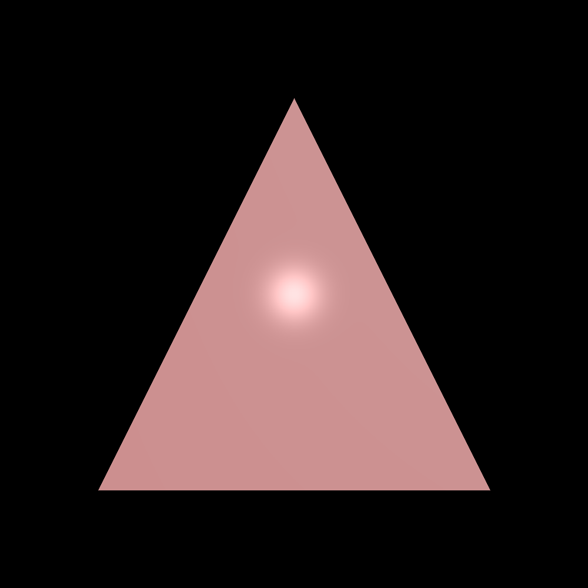
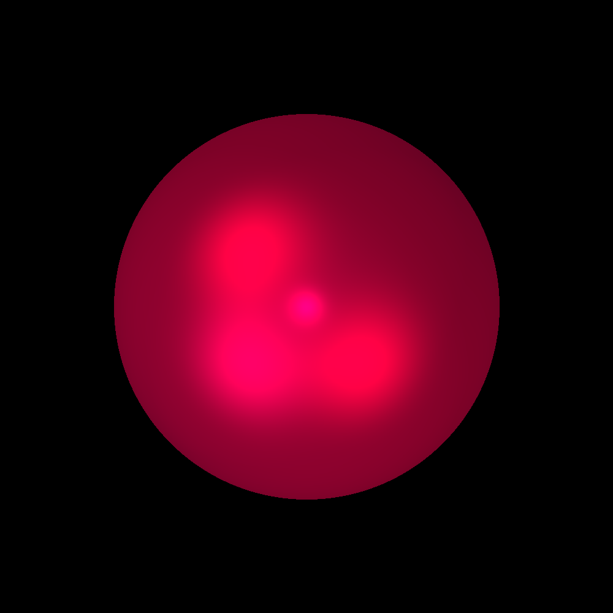
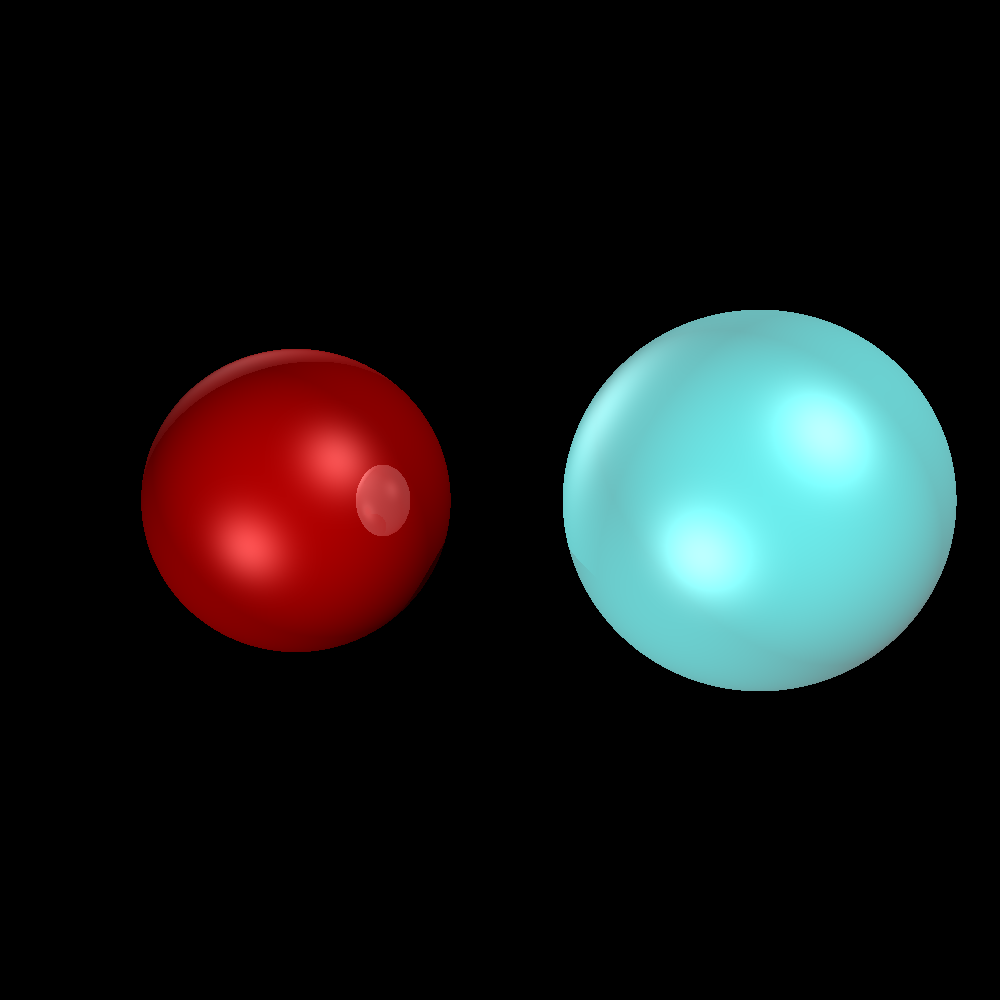
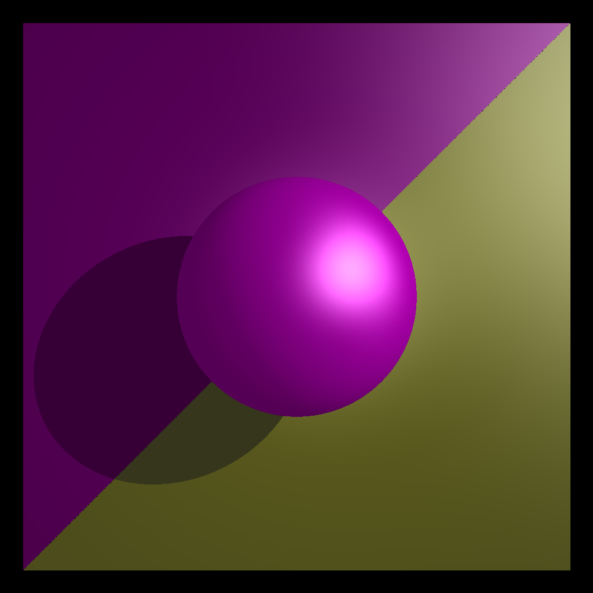
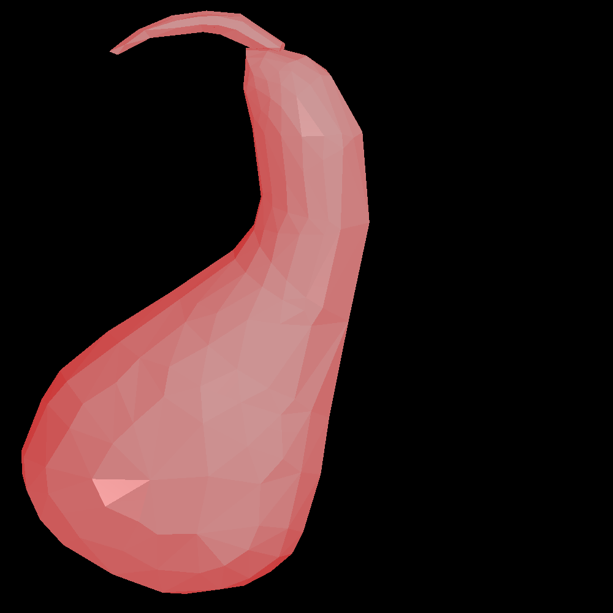
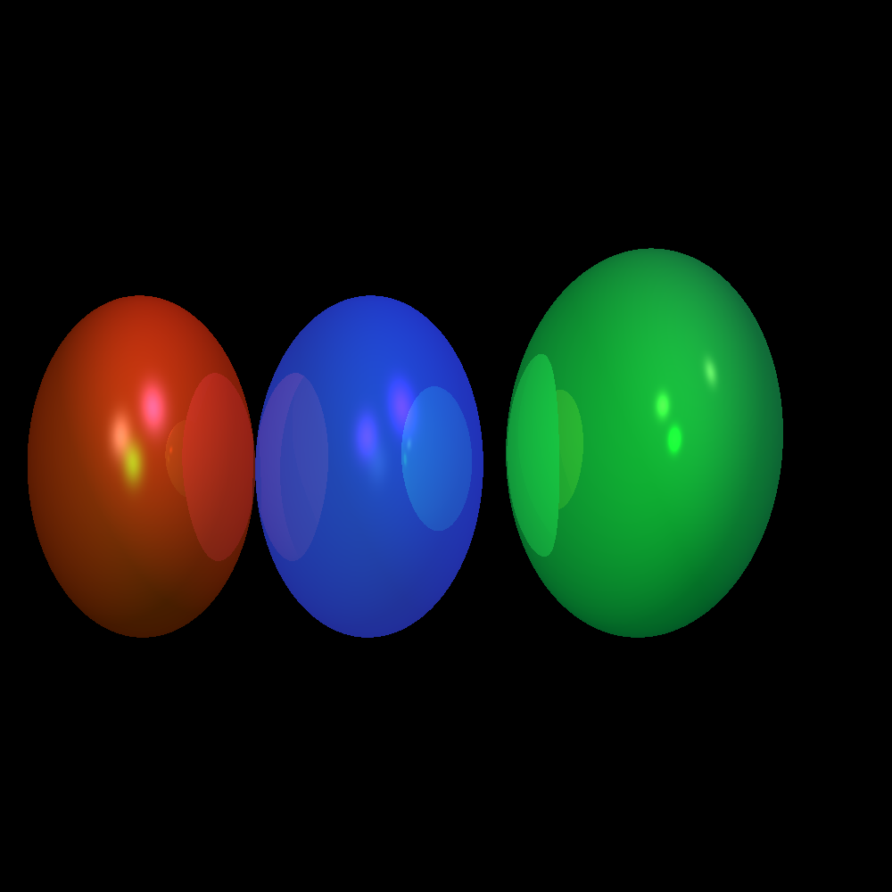

Assignment 2
Home
Raytracer assignment by Kevin Hui and Patrick Lin. Project specs can be seen
here
.
Images
     
Description
1) Triangle Shading
Input File
Notes
2) Sphere Shading
Input File
Notes
3) Reflection, Transformation
Input File
Notes
4) Sphere, Triangles, Shadow
Input File
Notes
5) Gourd Obj File
Input File
Object File
Notes
6) Multiple Transformations, Reflections
Input File
Notes